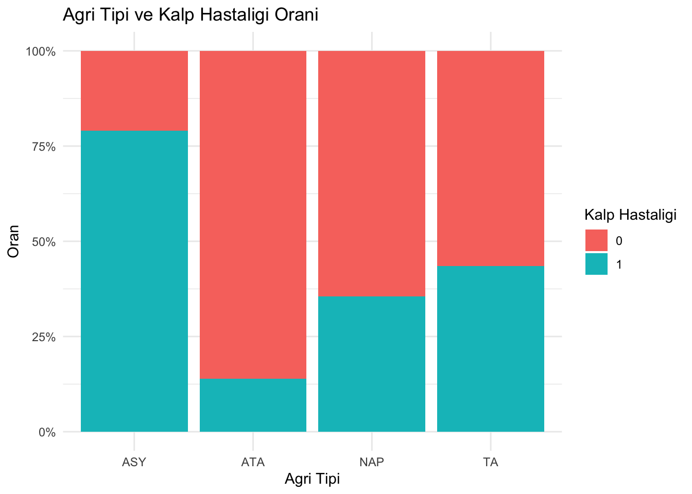

Bu veri setini halihazırda bağımsız olarak mevcut olan ancak daha önce birleştirilmemiş farklı veri setlerinin birleştirilmesiyle oluşturduk. Veri setimizde 5 kalp veri setini 11 ortak özellik üzerinden birleştirdik. Toplam gözlem sayımız tekrarlanan satırlar çıkarıldığında 918 gözlemdir.
Hastaların açlık kan şekeri değerlerini göztermektedir.
Dinlenme EKG Sonuçları:
Hastaların dinlenme EKG sonuçları normal, ST veya LVH olarak kategorize edilmiş.
Maksimum Kalp Atış Hızı:
Hastaların egzersiz sırasındakş maksimum kalp atış hızlarını göstermektedir.
Egzersiz Anginası:
Kalbi besleyen atardamarların darlık, tıkanma gibi sebeplerle kalbin oksijen ihtiyacını karşılayamadığı durumlarda kalp kökenli göğüs ağrısı veya sıkıntı hissi oluşur ve buna tıp dilinde veya latince angina pektoris adı verilir.
Oldpeak:
Dinlenmeye göre egzersizin neden olduğu ST depresyonu (‘ST’, EKG grafiğindeki konumlarla ilgilidir.
ST Eğimi:
ST eğimi, Up (Yukarı), Flat (Düz) ve Down (Aşağı) olarak kategorize edilmiş. S dalgası sonu (J noktası) ile T dalgası arasındaki yassı, izoelektrik EKG kısmıdır.
Kalp Hastalığı:
Kalp hastalığı olan hastalar 1, kalp hastalığı olmayan hastalar 0 ile kategorize edilmiştir.
2.3 Tercih Sebebi
Kalp hastalıklarının önceden belirli özelliklere bağlı olarak tahmin edilip edilemeyeceği üzerine çalışmak ve toplumdaki genel kanı olan, kalp hastalıklarının kalıtsal olduğu inancını irdelemek.
Bu özet istatistikler, veri setinin genel sağlığını ve popülasyonun sağlık profillerini anlamak için kritik bilgiler sağlar. Daha detaylı analizler ve grafikler, bu özet istatistiklerin altında yatan ilişkileri ve trendleri ortaya çıkarmaya yardımcı olabilir.
3.1 Keşifsel Veri Analizi
Veri setindeki cinsiyet dağılımı:
Erkekler, tüm yaş aralıklarında kadınlardan daha fazla sayıya sahip olduğu net olarak görülmektedir.
Her iki cinsiyet de 50-55 yaş aralığında zirve yapmaktadır. 30-45 yaş aralığında ve 65-75 yaş aralığında erkeklerin sayısı belirgin şekilde daha fazla görülmektedir.
barplot(table(df_total$Cinsiyet), main ="Cinsiyet Dağılımı", xlab ="Cinsiyet", ylab ="Kişi Sayısı", col =c("blue", "pink"), legend =c("Erkek", "Kadın"))
R Talimatları
ggplot(df_total, aes(x = Yas, fill = Cinsiyet)) +geom_histogram(position ="identity", alpha =0.5, bins =10) +scale_fill_manual(values =c("blue", "red")) +labs(x ="Yaş", y ="Frekans", title ="Erkek ve Kadınların Yaş Dağılımları") +theme_minimal()+scale_x_continuous(breaks =seq(30, 70, by =5))+scale_y_continuous(breaks =seq(0, 200, by =10))
Bu veri dünya genelinde kalp hastalığı rahatsızlığı ile hastaneye başvuranların, büyük kısmının erkek olması sebebiyle erkekler kalp rahatsızlığına daha yatkın olabilir mi? sorusu ortaya atmaktadır.
R Talimatları
data <-read_excel("heart1.xlsx")df_summary <- df_total %>%group_by(Cinsiyet, Kalp_Hastaligi) %>%summarise(count =n()) %>%ungroup() %>%group_by(Cinsiyet) %>%mutate(total =sum(count), proportion = count / total *100) %>%filter(Kalp_Hastaligi ==1)ggplot(df_summary, aes(x = Cinsiyet, y = proportion, fill = Cinsiyet)) +geom_bar(stat ="identity", alpha =0.7) +scale_fill_manual(values =c("Erkek"="#9999FF", "Kadin"="#FF9999")) +labs(title ="Cinsiyet & Kalp Hastalığına Yakalanma Oranı(%)", x ="Cinsiyet", y ="Kalp Hastalığına Yakalanma Oranı(%)") +theme_minimal(base_size =15)+theme(plot.title =element_text(size =14),axis.title.x =element_text(size =12),axis.title.y =element_text(size =12) ) +geom_text(aes(label =paste0(round(proportion, 1), "%")), vjust =-0.5, size =5)
R Talimatları
df_total <-read_excel("heart1.xlsx")par(mar =c(5, 5, 4, 2) +0.1) df_filtered <- df_total[df_total$Kolestorel >0,]# Kolesterol değeri sıfır olanları filtrelemeplot(df_filtered$`Dinlenme_Kan_Basinci mm/HG`, df_filtered$Kolestorel, xlab ="Dinlenme Kan Basıncı (mm/HG)", ylab ="Kolesterol", main ="Kan Basıncı ve Kolesterol İlişkisi", col =ifelse(df_total$Kalp_Hastaligi ==1, "red", "blue"),pch =19, # Noktaların şelkicex =0.5, # Nokta boyutulwd =2,# Nokta çizgi kalınlığıalpha =0.5) # Nokta saydamlgııı legend("topright", legend =c("Kalp Hastalığı Yok", "Kalp Hastalığı Var"), col =c("blue", "red"), pch =19, pt.cex =1.1, # Nokta boyutucex =0.5, # Metin boyututitle ="Kalp Hastalığı", bg ="yellow", # Arkaplan renkbox.lwd =1.5) # Kutu çizgi kalınlıgıı
Görüldüğü üzere, genel eğilim, dinlenme kan basıncının yüksek olduğu durumlarda kolesterol seviyelerinin arttığı yönündedir. Ayrıca, kalp hastalığı olan bireylerin genellikle daha yüksek kolesterol seviyelerine sahip olduğu gözlemlenmektedir.Ancak, bu ilişkinin kesin olmadığını belirtmek gerekir, çünkü bazı düşük dinlenme kan basıncı değerlerine sahip bireylerin yine de yüksek kolesterol seviyelerine sahip olduğu noktalar görülebilmektedir.
Bunların yanında bu grafikte Dinlenme Kan Basıncı 120- 140 - 160 mm/HG değerlerinde bir patern görülmektedir. Bu paterinin ölçümleri yuvarlayan doktorlar veya hemşirelerden kaynaklandığı düşünülmektedir.
Kolesterol değerleri 400’ün üzerine çıktığında kalp hastalığı olan bireylerin sayısında artış gözlemleniyor.
Kırmızı ve mavi noktalar arasında belirgin bir ayrım yok gibi görünüyor; bu, dinlenme kan basıncı ve kolesterol değerlerinin tek başına kalp hastalığını öngörmede yeterli olmadığını gösterebilir.
R Talimatları
data <-read_excel("heart1.xlsx")par(mfrow =c(2, 2), oma =c(0, 0, 2, 0), mar =c(4, 4, 2, 1), cex.lab =0.8, cex.main =1, cex.axis =0.8)df_filtered <- df_total[df_total$Kolestorel >0,]boxplot(df_filtered$Kolestorel ~ df_filtered$Kalp_Hastaligi, main ="Kolesterol - Hastalık", xlab ="Hastalık", ylab ="Kolesterol", col =c("turquoise", "coral"), names =c("Hayır", "Evet"))boxplot(data$`Dinlenme_Kan_Basinci mm/HG`~ data$Kalp_Hastaligi, main ="Dinlenme Kan Basıncı - Hastalık", xlab ="Hastalık", ylab ="Dinlenme Kan Basıncı (mm/HG)", col =c("turquoise", "coral"), names =c("Hayır", "Evet"))boxplot(data$Maks_Kalp_Atis ~ data$Kalp_Hastaligi, main ="Maksimum Kalp Atışı-Hastalık", xlab ="Hastalık", ylab ="Maksimum Kalp Atışı", col =c("turquoise", "coral"), names =c("Hayır", "Evet"))boxplot(data$Yas ~ data$Kalp_Hastaligi, main ="Yaş - Hastalık", xlab ="HHastalık", ylab ="Yaş", col =c("turquoise", "coral"), names =c("Hayır", "Evet"))title("Boxplots Niteliklerin Hastalığa Etkisi", outer =TRUE, cex.main =1)
Kalp hastalığı olmayan bireylerde maksimum kalp atışı genellikle daha yüksek (medyan yaklaşık 160)
Kalp hastalığı olmayan bireylerin yaş aralığı genellikle daha düşük ve daha dar bir aralıkta yoğunlaşmış (medyan yaklaşık 45).
Kalp hastalığı olan bireylerde yaş daha geniş bir aralıkta dağılmış ve daha yüksek (medyan yaklaşık 55).
Bu da yaşın, kalp hastalığı için önemli bir risk faktörü olduğunu göstermektedir.
Veriler, kalp hastalığı olan bireylerin genellikle daha yüksek kolesterol ve dinlenme kan basıncına sahip olduğunu, ancak maksimum kalp atışlarının ve yaşlarının daha yüksek olduğunu göstermektedir.
R Talimatları
df_total$Kalp_Hastaligi <-as.factor(df_total$Kalp_Hastaligi)df_total$Agri_Tipi <-as.factor(df_total$Agri_Tipi)ggplot(data = df_total, aes(x = Agri_Tipi, fill = Kalp_Hastaligi)) +geom_bar(position ="fill") +scale_y_continuous(labels = scales::percent) +labs(title ="Agri Tipi ve Kalp Hastaligi Orani",x ="Agri Tipi",y ="Oran",fill ="Kalp Hastaligi") +theme_minimal()

Bu grafik, hangi ağrı tiplerinin kalp hastalığı ile daha çok ilişkilendirildiğini görselleştirerek analiz etmeye yardımcı olur. Örneğin, TA (Asimptomatik) ağrı tipi olan bireylerin arasında kalp hastalığına sahip olanların oranının diğer ağrı tiplerine göre daha yüksek olduğu gözlemlenmektedir.
3.2 Trend Analizi
İlgili veri setinde dikkatimizi çeken ve gözlem verileriyle ispatlamak istediğimiz YAŞ ve KALP HASTALIĞI arasindaki trend oldu
R Talimatları
data <-read_excel("heart1.xlsx")age_heart_disease <- data %>%group_by(Yas, Kalp_Hastaligi) %>%summarise(count =n()) %>%spread(Kalp_Hastaligi, count, fill =0) %>%mutate(total =`0`+`1`,percent =`1`/ total *100)ggplot(age_heart_disease, aes(x = Yas, y = percent)) +geom_area(fill ="lightblue", alpha =0.5) +geom_line(color ="blue") +labs(title ="Yaşlara Göre Kalp Hastalığı Olma Yüzdesi",x ="Yaş",y ="Kalp Hastalığı Olma Oranı (%)") +theme_minimal()
Görüldüğü üzere, kalp hastalığının yaşla birlikte arttığını açıkça göstermektedir. Genç yaşlarda oran daha düşükken, yaşlandıkça kalp hastalığına sahip olma oranı önemli ölçüde yükselmektedir.
3.3 Model Uydurma
3.3.1 Regresyon Modeli
Elimizdeki veri seti için bir tahmin modeli oluşturmak istedik, Bu modelin incelediğimiz veri seti kapsamında veri setindeki öznitelikler kapsamında Kalp Hastası olup olmadığının sonucunu belirli oranlarda doğru olarak tahmin etmesi için çalışmalar yaptık.
İlk olarak ilgili veri setindeki kategorik değişkenleri vektörlere çevirdik, daha sonra elimizdeki veri setinin %80 inceleme %20 test verisi olacak şekilde ayırdık. Tüm değişkenleri vektör yaptıktan sonra Lojistik Regresyon Modeli uygulayarak bir model çıkardık ilgili modelin katsayıları aşağıdadır.
R Talimatları
data <-read_excel("heart1.xlsx")colnames(df_total) <-c("Yas", "Cinsiyet", "Agri_Tipi", "Dinlenme_Kan_Basinci", "Kolestorel", "Aclik_Kan_Sekeri", "Dinlenme_EKG", "Maks_Kalp_Atis", "Egzersiz_Angina", "Oldpeak", "ST_Egimi", "Kalp_Hastaligi")df_total$Cinsiyet <-as.factor(df_total$Cinsiyet)df_total$Agri_Tipi <-as.factor(df_total$Agri_Tipi)df_total$Dinlenme_EKG <-as.factor(df_total$Dinlenme_EKG)df_total$Egzersiz_Angina <-as.factor(df_total$Egzersiz_Angina)df_total$ST_Egimi <-as.factor(df_total$ST_Egimi)df_total$Kalp_Hastaligi <-as.factor(df_total$Kalp_Hastaligi)set.seed(123)trainIndex <-createDataPartition(df_total$Kalp_Hastaligi, p = .8, list =FALSE, times =1)data_train <- df_total[trainIndex, ]data_test <- df_total[-trainIndex, ]model <-glm(Kalp_Hastaligi ~ ., data = data_train, family = binomial)print(model)
Regresyon modeli değerleri ve katsayıları yukarıda yer almaktadır. Bu modeli kullanarak yapılan tahminleri test verisi ile test ettik ve sonuçları için karmaşıklı matrisinde aşağıdaki gibi yazdırdık.
R Talimatları
data <-read_excel("heart1.xlsx")colnames(df_total) <-c("Yas", "Cinsiyet", "Agri_Tipi", "Dinlenme_Kan_Basinci", "Kolestorel", "Aclik_Kan_Sekeri", "Dinlenme_EKG", "Maks_Kalp_Atis", "Egzersiz_Angina", "Oldpeak", "ST_Egimi", "Kalp_Hastaligi")df_total$Cinsiyet <-as.factor(df_total$Cinsiyet)df_total$Agri_Tipi <-as.factor(df_total$Agri_Tipi)df_total$Dinlenme_EKG <-as.factor(df_total$Dinlenme_EKG)df_total$Egzersiz_Angina <-as.factor(df_total$Egzersiz_Angina)df_total$ST_Egimi <-as.factor(df_total$ST_Egimi)df_total$Kalp_Hastaligi <-as.factor(df_total$Kalp_Hastaligi)set.seed(123)trainIndex <-createDataPartition(df_total$Kalp_Hastaligi, p = .8, list =FALSE, times =1)data_train <- df_total[trainIndex, ]data_test <- df_total[-trainIndex, ]model <-glm(Kalp_Hastaligi ~ ., data = data_train, family = binomial)###########################################HATA ANALİZİ###############################predictions <-predict(model, data_test, type ="response")predicted_classes <-ifelse(predictions >0.5, 1, 0)predicted_classes <-as.factor(predicted_classes)levels(predicted_classes) <-levels(data_test$Kalp_Hastaligi)confusionMatrix(predicted_classes, data_test$Kalp_Hastaligi)
Confusion Matrix and Statistics
Reference
Prediction 0 1
0 73 7
1 9 94
Accuracy : 0.9126
95% CI : (0.8619, 0.9492)
No Information Rate : 0.5519
P-Value [Acc > NIR] : <2e-16
Kappa : 0.8228
Mcnemar's Test P-Value : 0.8026
Sensitivity : 0.8902
Specificity : 0.9307
Pos Pred Value : 0.9125
Neg Pred Value : 0.9126
Prevalence : 0.4481
Detection Rate : 0.3989
Detection Prevalence : 0.4372
Balanced Accuracy : 0.9105
'Positive' Class : 0
R Talimatları
cm <-confusionMatrix(predicted_classes, data_test$Kalp_Hastaligi)
Doğru Negatifler (TN): 73 (Modelin 0 olarak doğru tahmin ettiği ve gerçekte de 0 olan)
Yanlış Negatifler (FN): 7 (Modelin 0 olarak yanlış tahmin ettiği ve gerçekte 1 olan)
Yanlış Pozitifler (FP): 9 (Modelin 1 olarak yanlış tahmin ettiği ve gerçekte 0 olan)
Doğru Pozitifler (TP): 94 (Modelin 1 olarak doğru tahmin ettiği ve gerçekte de 1 olan)
Gini hatalar algoritması ile düşük gini değerleri çıkan nitelikten başlayarak ve gini algoritması kullanılarak karar ağacı oluşturuldu, bu karar ağacının test verisinde değerlendirilmesi sonucu %82 oranında doğru tahmin yaptırğı görüldü.
3.4 Sonuçlar
Sonuç olarak veri setindeki değişkenlerin birbirleriyle olan ilişkilerine anlamlı grafikler çizdirerek baktık, incelenen grafiklerden net sonuçlar yaşın, egzersiz anginanın, Agri tipinin ve ST eğiminin kalp hastalığı üzerinde diğer etkilerden daha ağırlıklı olduğunu gördük. Bunun yanında cinsiyet farkınında hastalığa etkisi önemli bir soru ortaya çıkardı, veri setinde cinsiyetlerin sayılarının eşitlenmesinden sonra tekrar analizler yapılarak daha doğru sonuçlara ulaşılabilir. Elde edilen Regresyon modeli %91 oranında doğru sonuçlar ortaya çıkarmaktadır. Ama tabiki bu sonuç test verimizde denendiği için başka test verilerinde de denenerek test edilmelidir. Bunların yanında karar ağacı modeli ile bir tahmin methodu geliştirdik bu method ile istenilen verileri girmeniz durumunda kalp hastası olup olmadığınız konusunda bir tahmin cevabı alabilirsiniz.
4 Sonuçlar ve Ana Çıkarımlar
Bu çalışmada, beş farklı veri setini birleştirerek oluşturulan ve toplam 918 gözlem içeren bir veri seti üzerinde analizler yapıldı. Analizlerde, kalp hastalığının belirli özelliklere bağlı olarak tahmin edilip edilemeyeceği incelendi ve kalp hastalıklarının kalıtsal olup olmadığı gibi genel inançlar değerlendirildi.
4.0.0.1Veri Keşfi ve Ön İşleme
Yaş ve Cinsiyet: Veri setinde erkeklerin sayısının kadınlara göre daha fazla olduğu görüldü. Özellikle 50-55 yaş aralığında her iki cinsiyet de zirve yapmaktadır.
Ağrı Tipi: Farklı göğüs ağrısı tiplerinin kalp hastalığı ile ilişkisi incelendi. TA (Asimptomatik) ağrı tipi olan bireylerin kalp hastalığına daha yatkın olduğu gözlemlendi.
Dinlenme Kan Basıncı ve Kolesterol: Yüksek dinlenme kan basıncı ve kolesterol seviyelerinin kalp hastalığı riskini artırdığı görüldü.
Diğer Değişkenler: Maksimum kalp atış hızı, egzersiz anginası, Oldpeak ve ST eğimi gibi diğer özelliklerin de kalp hastalığı ile ilişkisi incelendi.
4.0.0.2Keşifsel Veri Analizi
Cinsiyet ve Kalp Hastalığı: Erkeklerin kalp hastalığına yakalanma oranının kadınlara göre daha yüksek olduğu görüldü.
Dinlenme Kan Basıncı ve Kolesterol İlişkisi: Dinlenme kan basıncı ve kolesterol arasındaki ilişkinin, kalp hastalığı riskini artırdığı ortaya kondu.
Boxplot Analizleri: Kolesterol, dinlenme kan basıncı, maksimum kalp atışı ve yaş gibi değişkenlerin kalp hastalığı üzerindeki etkileri grafiklerle gösterildi.
4.0.0.3Model Uygulaması
Lojistik Regresyon Modeli: Lojistik regresyon modeli kullanılarak kalp hastalığı tahmini yapıldı. Modelin katsayıları incelendi ve test verisi üzerinde modelin performansı değerlendirildi.
Karmaşıklık Matrisi Sonuçları: Modelin doğru negatif, yanlış negatif, yanlış pozitif ve doğru pozitif sayıları hesaplandı. Modelin doğruluğu %91 olarak belirlendi.
Tahmin Doğruluğu: Modelin tahmin doğruluğu çeşitli performans metrikleri kullanılarak değerlendirildi ve iyi bir performans sergilediği görüldü.
Karar Ağacı Metodu : Gini hatalar algoritması ile düşük gini değerleri çıkan nitelikten başlayarak ve gini algoritması kullanılarak karar ağacı oluşturuldu, bu karar ağacının test verisinde değerlendirilmesi sonucu %82 oranında doğru tahmin yaptırğı görüldü.
4.0.0.4Ana Çıkarımlar
Yaş Faktörü: Yaşın, kalp hastalığı için önemli bir risk faktörü olduğu doğrulandı. Yaş arttıkça kalp hastalığına yakalanma oranı önemli ölçüde yükselmektedir.
Cinsiyet Farklılıkları: Erkeklerin kalp hastalığına daha yatkın olduğu ve yaş ile birlikte bu riskin arttığı gözlemlendi.
Ağrı Tipleri: TA (Asimptomatik) ağrı tipi olan bireylerin kalp hastalığı riskinin daha yüksek olduğu görüldü.
Dinlenme Kan Basıncı ve Kolesterol: Yüksek dinlenme kan basıncı ve kolesterol seviyelerinin kalp hastalığı riskini artırdığı belirlendi.
Model Performansı: Lojistik regresyon modelinin %91 oranında doğru tahminler yaptığı ve bu sonuçların başka test verileri ile de doğrulanması gerektiği sonucuna varıldı.
4.0.0.5Öneriler ve Gelecek Çalışmalar
Cinsiyet Dağılımı: Veri setindeki cinsiyet dağılımının dengelenmesi, daha doğru analiz sonuçlarına ulaşmak için önemli bir adımdır.
Model Doğrulaması: Elde edilen modelin başka veri setleri ile test edilerek doğrulanması gerekmektedir.
Diğer Modellerin Kullanımı: Karar ağacı gibi farklı tahmin yöntemleri de kullanılarak model performansları karşılaştırılabilir.
Kalıtsallık İncelemesi: Kalp hastalıklarının kalıtsal olup olmadığının daha detaylı incelenmesi için genetik veri setleri de kullanılabilir.
Bu çalışma, kalp hastalığı riskini belirli özelliklere göre tahmin edebilme potansiyelini ortaya koymakta ve toplumda yaygın olan bazı inançları veri analizi ile irdelemektedir. Analiz ve modelleme sonuçları, kalp hastalığı riskinin tahmin edilmesi ve önlenmesi açısından önemli bilgiler ve model sunmaktadır.